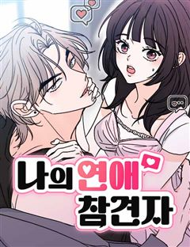
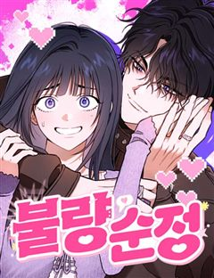

이번 생도 잘 부탁해 같은 웹툰 추천

이번 생도 잘 부탁해 · 이혜
이번 생도 잘 부탁해 재밌게 봤다면 이 웹툰들도 좋아할 거예요. 같은 장르이면서 폭스남, 재회, 구원서사 같은 요소가 겹치는 작품을, 겹치는 요소가 많은 순서로 20개 골랐어요.
2026-10-09 기준 · 네이버웹툰·카카오웹툰·레진코믹스 · 성인 작품 제외
내 취향으로 직접 골라 추천받기 →-
1
 네이버웹툰
네이버웹툰물고 뜯고 속이고
시각장애인 자선 행사장, 그 화려한 파티의 중심. 그 누구보다 아름답게 빛나는 유명 국회의원의 양딸 윤서하. 하지만 시력을 잃은 그녀에게 이 화려함은 울타리가 아닌 족쇄일 뿐이다. 이 지옥같은 족쇄에서 벗어나기 위해, 서하는 자신의 모든 것을 건 거…
폭스남재회구원서사로맨스네이버웹툰에서 보기 → -
2
 네이버웹툰
네이버웹툰사내연애 사절!
첫사랑 별거 있나. 어른이 되어 첫사랑을 다시 만난다면, 과연 우리는 여전히 설렐까? 첫사랑에서 친구로, 친구에서 동료로, 역행하는 관계 속에서 솔직한 내 마음은 '사내연애 사절!' <유일무이 로맨스> 두부 X <바른연애 길잡이> 남수 작가의 만남!…
폭스남재회로맨스네이버웹툰에서 보기 → · 사내연애 사절! 같은 웹툰 → -
3
 네이버웹툰
네이버웹툰벙커의 낮
어릴 적 벙커에 데려간 ‘원혁’을 내친 ‘서우’. 이후 고등학생이 된 서우는 고립된 삶에 극단적인 시도를 하던 중, 또 다른 벙커를 발견하고 들어간다. 그러나 피 칠갑인 채 들어온 ‘원혁’에 의해 갇히게 되는데...
폭스남구원서사로맨스네이버웹툰에서 보기 → · 벙커의 낮 같은 웹툰 → -
4
 네이버웹툰
네이버웹툰하는 사이
모두의 태양이자 주목받는 존재인 강시화, 그런 시화와 특별한 소꿉 친구 사이로 주변의 질투를 받던 이은서. 어느 날 홀연히 사라졌던 시화가 몇 년이 흘러 돌아왔다. 자꾸 흔들리는 은서의 마음과 도저히 짐작할 수 없는 시화의 행동. 우리는 특별한 사이…
폭스남재회로맨스네이버웹툰에서 보기 → -
5
 네이버웹툰
네이버웹툰양아치의 첫사랑
‘그 시절, 내가 좋아한 양아치 남자애도 날 좋아했었다.’ 도래는 대학에서 5년 만에 첫사랑 해원을 마주친다. 그리고 뒤늦은 고백을 받는데.. 기쁜 마음보다는 당황스럽기만 하다. 그에게는 여자친구가 있었기에! 제정신 아닌 그의 5년 만의 고백. 과연…
폭스남재회로맨스네이버웹툰에서 보기 → -
6
 네이버웹툰
네이버웹툰삼이는 재생한다
모든 게 완벽했던 인생에서 제발로 뛰쳐나와 극한의 가난한 생활을 하던 '오삼이'는 차가운 외모지만 마음만은 따뜻한 '김표준'과 그런 표준을 남몰래 좋아하는 '유찬'과 가까워지며 묘한 삼각관계로 뒤범벅된 학교생활을 하게 된다.
폭스남구원서사로맨스네이버웹툰에서 보기 → -
7
 네이버웹툰
네이버웹툰사랑받고 자란
열네 살부터 홀로 낡은 아파트에 남겨져 자라온 소녀 유영. 어느 날, 계단에 버려진 듯 홀로 앉아 있던 여덟 살 소년 시안을 발견한다. 자신과 닮은 아이를 외면하지 못한 유영은 시안을 집으로 데려오고, 두 사람은 세상에서 서로의 유일한 가족이 되어간…
폭스남구원서사로맨스네이버웹툰에서 보기 → -
8
 네이버웹툰
네이버웹툰개는 헤엄치는 꿈을 꾼다
"우리 이복 남매인 거 알아요?" 매미 소리가 기승을 부리던 여름, 여은의 일상이 완벽하게 흔들린다. 빚만 떠넘기던 엄마가 두고 간 7살짜리 동생, 그리고 엄마의 교통사고 소식과 함께 찾아온 의문의 남자, 기승도. 무채색의 차가운 기운을 풍기는 그와…
폭스남구원서사로맨스네이버웹툰에서 보기 → -
9

-
10
 네이버웹툰
네이버웹툰함부로 친절하지 말라
수백 년간 '장벽'과 끊임없는 전쟁을 치루는 칼레타 제국의 천재 기사로 칭송 받던 '루스티카 제너스'는 거짓말처럼 하루아침에 모든 힘이 증발했다. 그 후, 4년 간 폐인처럼 칩거하던 그녀 앞에 나타나 달콤한 하룻밤을 보낸 정체 모를 남자 '헤이든'은…
재회구원서사로맨스네이버웹툰에서 보기 → -
11네이버웹툰
우리의 공백
누군가 떠나는것이 두려워 회피형으로 자란 '희진' 자신과 정반대의 모습이 된 소꿉친구 '진환'과 5년만에 재회한다. 외톨이 희진이와 화려한 친구들의 조심스럽고 소중한 사랑과 우정이야기
재회구원서사로맨스네이버웹툰에서 보기 → -
12
 네이버웹툰
네이버웹툰시한부 황후의 나쁜 짓
정략결혼이었지만 첫사랑이었다. 황제여서가 아니라 당신이어서 사랑했다. 휠체어를 탄 몸으로 스텔라는 제국과 남편을 위해 헌신했다. 그러나 돌아온 것은 처절한 죽음. 여신은 사지가 마비되어 죽은 스텔라를 회귀시켰다. 이번 생에서도 소꿉친구를 선택하는 남…
재회구원서사로맨스네이버웹툰에서 보기 → -
13
 네이버웹툰
네이버웹툰공작의 첫날밤을 빼앗은 쓰레기 영애
소공작을 유혹하라는 아버지의 계략에 휘말린 시골 백작 영애 엘리오. 손끝 하나 닿지 않았건만 하루아침에 황녀의 정혼자를 덮친 ‘쓰레기 영애’가 되어 버린다. 그런데 정정해 주겠다던 소공작은 오히려 스캔들에 불을 지피고, 폭력적인 아버지에게서 벗어나고…
재회구원서사로맨스네이버웹툰에서 보기 → -
14
 네이버웹툰
네이버웹툰중간에서 만나
"내가 재밌게 해줄 수 있는데." 서른 살, 노잼 인생을 살고 있는 여름 앞에 어느 날 나타난 미스테리 연하남! 앞뒤 가리지 않고 직진하는 모습이 그저 귀엽다가도, 어딘가 세하고 어딘가 집착적인데? 대체 너 나한테 원하는 게 뭐니?! 두근두근 쌍방사…
폭스남로맨스네이버웹툰에서 보기 → · 중간에서 만나 같은 웹툰 → -
15
 네이버웹툰
네이버웹툰세기말 풋사과 보습학원
어릴 때 알던 재수없던 놈이 더 재수없는 놈이 되어 돌아왔다! 중3 황미애의 옆 빌라에 어릴 때 잠깐 시골에서 봤던 김철이 이사 와 같은 학교 같은 반이 되고 '철이와 미애'라 놀림 받자 김철은 미애를 불쾌해하며 피한다. 너만 불쾌한 줄 알아? 나쁜…
폭스남로맨스네이버웹툰에서 보기 → · 세기말 풋사과 보습학원 같은 웹툰 → -
16
 네이버웹툰
네이버웹툰하렘의 남자들
"내 후궁들부터 들이기로 하였다. 한 다섯 정도." 타리움 제국의 황녀, 라틸. 그녀의 첫사랑 하이신스는 황제가 되기 위해 본국 권력자의 딸과 결혼한다. 충격 받는 라틸. 하지만 그 충격이 가시기도 전에 황태녀가 되고,이복남매의 반란 세력에 맞서 황…
폭스남로맨스네이버웹툰에서 보기 → · 하렘의 남자들 같은 웹툰 → -
17
 네이버웹툰
네이버웹툰내 남편의 정부에게
나, 레티시아 비올렛은 남편에게 헌신했지만, 모든 것을 잃었다. 그대로 목숨까지 잃을 뻔하던 찰나, 한 남자가 나타난다. 그 남자는 완벽한 복수를 이루도록 도와준다는데... "제 복수를 이루어 주겠다는 말... 꼭 지켜 주세요." 날 죽음까지 몰아넣…
폭스남로맨스네이버웹툰에서 보기 → -
18
 네이버웹툰
네이버웹툰결혼사수스캔들
외모, 재력, 지성 뭐 하나 빠지지 않는 재벌집 막내손녀 채은아. 스무 살이 되며 이제 창창한 앞날이 펼쳐진 줄 알았는데- 결혼을 하라고?! 뺏겨버린 카드도, 결혼도 문제지만 왜 하필 상대가 원수 같은 전남친이냐고! 결혼(이라 쓰고 카드라고 읽는다)…
폭스남로맨스네이버웹툰에서 보기 → -
19

네이버웹툰나의 연애 참견자
행복함만이 가득할 것 같았던 첫 연애. 그러나 내 남자친구는 "여자사람친구"를 좋아하는 것 같다.. 답답한 마음에 사용해 본 AI연애상담어플 '참견이' 근데 나보고 호구라고? 이거 AI 맞아?
폭스남로맨스네이버웹툰에서 보기 → -
20

네이버웹툰불량순정
첫사랑은 다정한 게 아니라, 그냥 아무에게나 잘해주는 사람이었다. 그래서 이번엔 안 속으려고 했다. 두 번째로 엮인 남자는 더 노골적이니까. 사람 다루는 게 능숙하고, 관심도 애정도 적당히 나눠 쓰는… 또 어장남! 근데 이상하다. 이 남자, 분명 똑…
폭스남로맨스네이버웹툰에서 보기 →